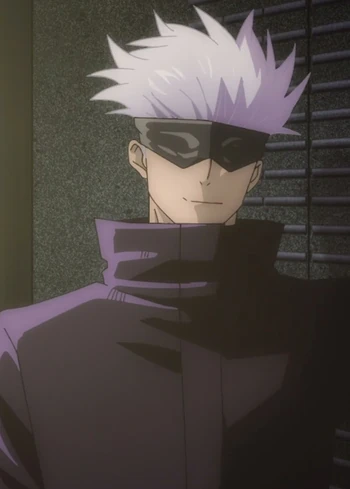
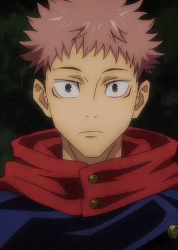
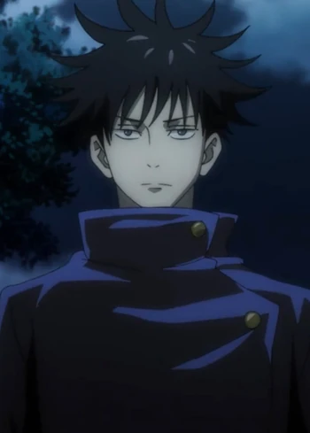
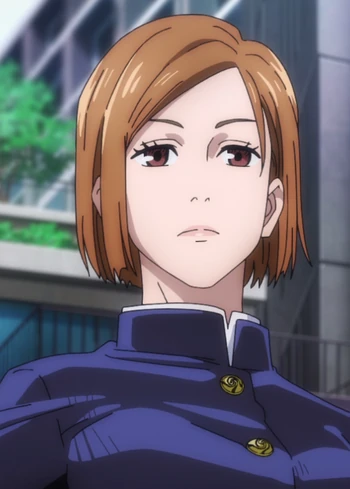
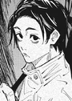
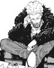
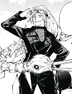

Kaisen Jujutsu
| Nombre |
Información |
| Técnica Maldita |
Vivo/Muerto |
Foto |
| Satoru Gojo |
La técnica maldita de Gojo es conocida como Técnica de Maldición Ilimitada (無下限 Mukagen?). Posee una serie de formas y en base a dichas formas, sube de nivel, permitiendo la manipulación precisa del espacio a nivel atómico, dando como múltiples resultados y técnicas posteriores dentro de la capacidad general |
Muerto |
 |
| Yuji Itadori |
Yuji Itadori es uno de los estudiantes más talentosos y poderosos. Incluso sin habilidades sobrenaturales, Yuji posee una fuerza sobrehumana, demostrando hazañas como lanzar un auto como se ve en la serie. La técnica del “Puño Divergente” hace que su energía maldita tenga un retraso debido a su incapacidad para seguir su ritmo. |
Vivo |
 |
| Megumi Fushiguro |
Técnica de Sombras de Diez Tipos (十種影法術 Tokusa no Kage Bōjutsu?) (lit. Técnica de las Diez Sombras) es una técnica maldita hereditaria entre los miembros pertenecientes al Clan Zenin, con ataques de tipo ofensivo/defensivo. Crea, invoca y manipula shikigamis, un tipo de espíritu maldito que actúa como agente ofensivo de su usuario. |
Vivo |
 |
| Nobara Kugisaki |
Técnica de Muñeco Vudú (芻霊呪法 Sūrei Juhō?) (lit. Técnica de Muñeco de Paja) es una técnica maldita hereditaria de tipo ofensivo. Permite el uso de un muñeco vudú para controlar al oponente desde diversas distancias.
|
Vivo |
 |
| Yuta Okkotsu |
Técnica de Discurso Maldito (呪言 Jugon?) (lit. Técnica de Palabras Malditas) es una técnica maldita hereditaria entre los miembros pertenecientes al Clan Inumaki, con ataques de tipo ofensivo/defensivo. Permite que las palabras que articule su usuario se vean reforzadas y como resultado, obliga a cualquiera que lo escuche a actuar o que se actúe sobre la base de esas palabras.
|
Vivo |
 |
| Kinji Hakari |
La técnica maldita de Hakari es Tren del Amor Puro (私鉄純愛列車 Shitetsu Jun'ai Ressha). Es una técnica que muestra todo su potencial cuando es utilizada en la Expansión territorial. De momento se desconoce sus capacidades fuera del territorio, mas que generar objetos o elementos pertenecientes al dominio como las puertas de un tren que Hakari genera para atrapar a su contrincante entre estas al cerrarlas o causarles daño haciendo lo mismo.
|
Vivo |
 |
| Yuki Tsukumo |
La técnica maldita de Yuki es Bom ba ye. Es una técnica que le permite a Yuki asignar una cantidad infinita de masa a sí misma, aumentando su peso, pero sin tener ningún efecto sobre ella misma, como la ralentización de la velocidad por el peso, siempre que esté por debajo de un limite desconocido. Gracias a esto Yuki puede aumentar enormemente su fuerza al punto que fue capaz de destrozar los brazos de Kenjaku de un solo golpe
|
Vivo |
 |